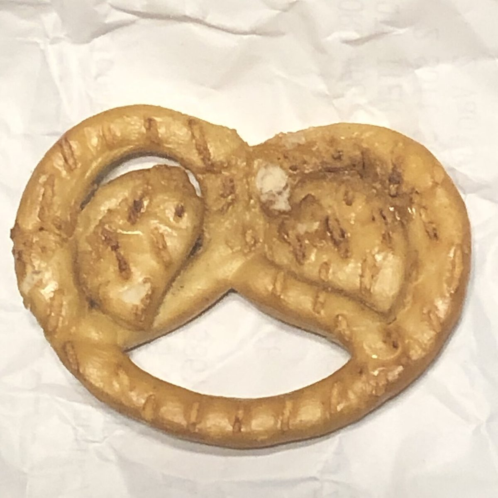

04 / 05 地点
店のこと
お店について確認できているのは、所在地・電話番号・Instagramのアカウントです。
このページの「想像してみる」部分は、制作側が想像して書いたものです。お店の実際の様子・考え・メニューとは関係がありません。
確認できていること
- 店名は「hachidori cafe」、業種はカフェ
- 所在地は愛知県安城市高棚町井池60-4(〒446-0053)
- 電話番号は0566-55-3348
- Instagramのアカウントは @hachidoricafe
- 営業時間・定休日・メニュー・価格・ご予約・駐車場は準備中

想像してみる
8の字という見立て
制作側の連想で、お店の理念・由来とは無関係です。屋号の「はち」から8を連想し、輪をふたつ描いて交差点に戻ってくる道すじを、サイトの作りにしました。何度でもホームに戻れる、というだけの見立てです(実際のお店の姿ではありません)。